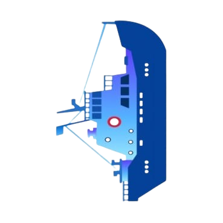
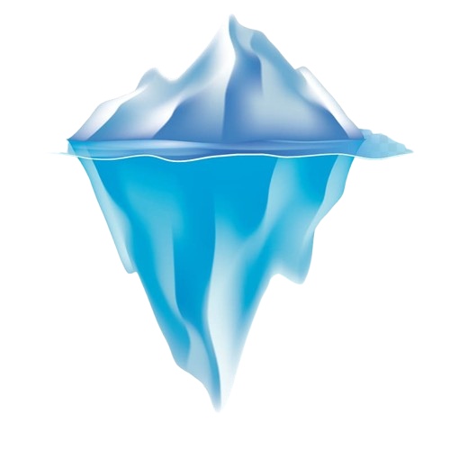

An AI-Enabled Antarctic Sea-Ice, Iceberg Trajectory, and Navigation Decision Support System designed for Transportation & Logistics.


Replaces static manual route planning with a dynamic, hazard-aware system for research vessel captains. Connects disparate standalone systems into a cohesive engine.
Built for scale, relying on powerful open-source data frameworks and mapping libraries.
The Antarctic environment is incredibly volatile, with sea-ice concentration shifting drastically over the annual cycle. Our predictive models adapt to massive spatial shifts.
Treats fuel efficiency as an explicit cost variable in the TD-A* algorithm. Fuel-optimized routing directly reduces carbon footprints and harmful black-carbon emissions.
Provides early warnings before hazards are visually detectable. Significantly lowers the risk of vessel-ice collisions, protecting crews and scientists.
Builds native forecasting capacity. Reduces the Ministry of Earth Sciences' (MoES) dependence on international ice services for mission-critical logistics.